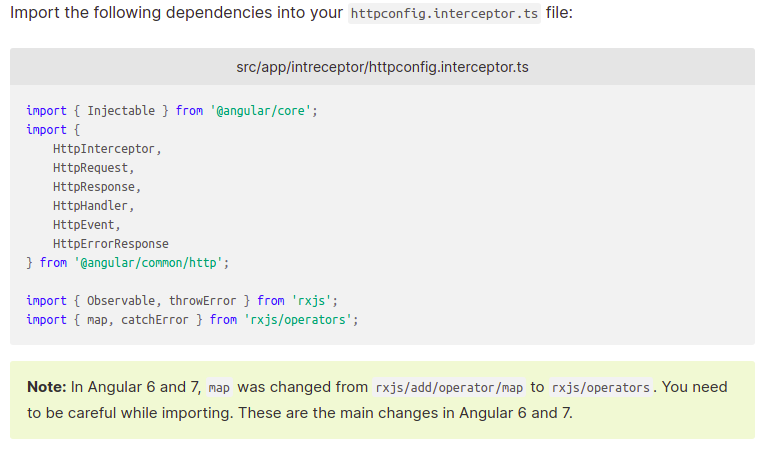
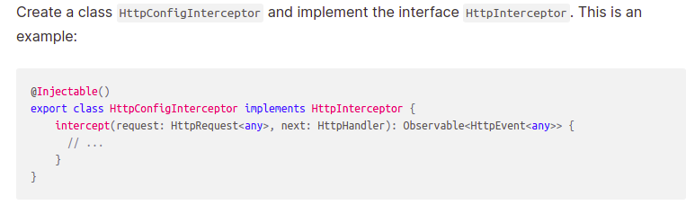
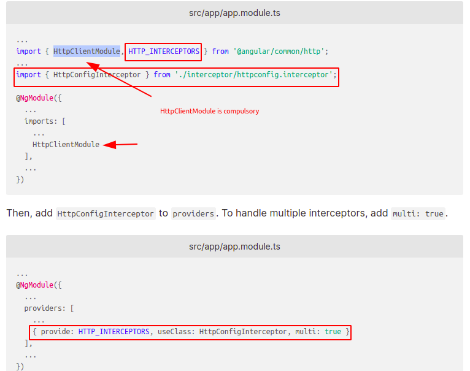
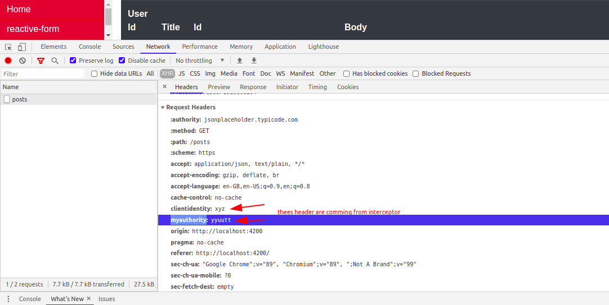

- Step 1: First manually create a "myinterceptors" Folder in "app" Folder.
- Step 2: Now manually create a "httpconfig.interceptor.ts" file under the interceptor folder.
- Step 3: Now import all nessesory file like this

- Step 4: Now copy code like this

- Step 5: Now register your interceptor in app.module.ts like this.

- Step 6: Now check interceptor file and work ahead.
- Note: to check interceptor is working or not? please make a http call and check. like this

For Complete reference Click Here